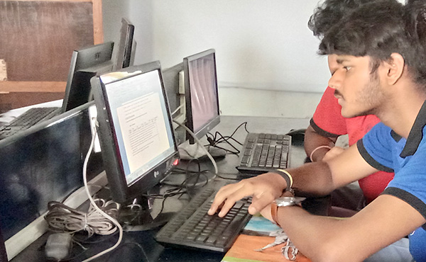

classroom you must see

Science labarotory
I first Joined the school at 2017 april.
Jermal's Academy is located at Majhabari in siliguri it has 12 class and 3 section for each class so total classroom are 36.The founder of Jermal's Academy is Vishal roy and the principle is Mr Ejaj sadiq.It was founded on 1984 and the opening time was at 7th march 2000 12am

Computer labarotory
I first Joined the school at 2017 april.
Jermal's Academy is located at Majhabari in siliguri it has 12 class and 3 section for each class so total classroom are 36.The founder of Jermal's Academy is Vishal roy and the principle is Mr Ejaj sadiq.It was founded on 1984 and the opening time was at 7th march 2000 12am